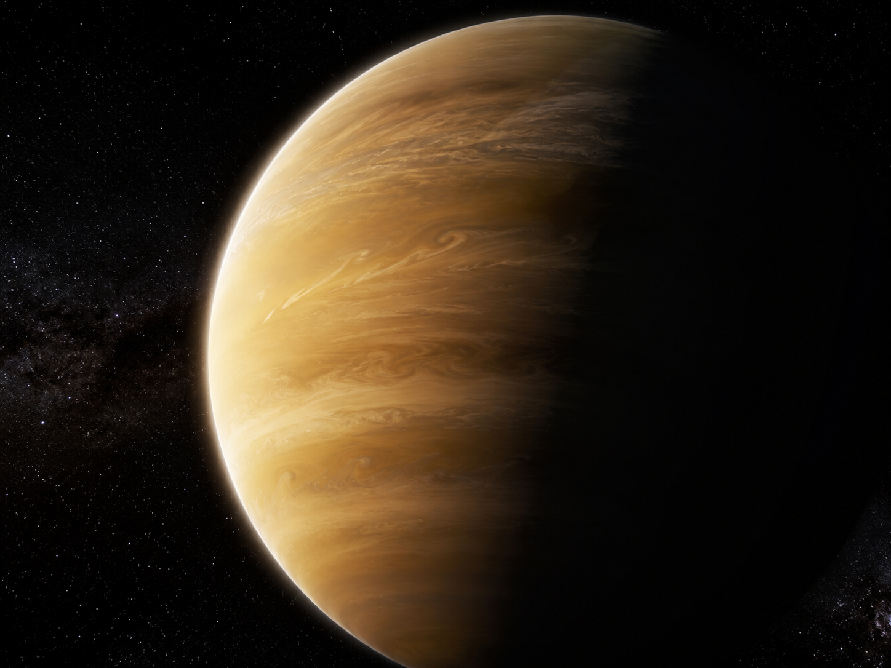
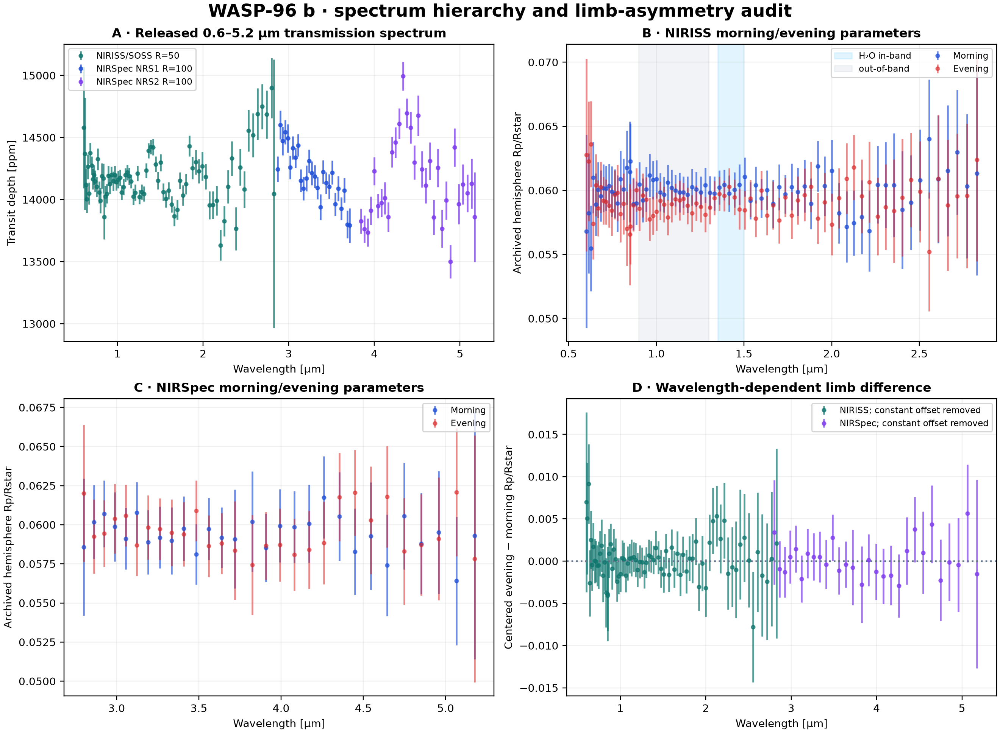
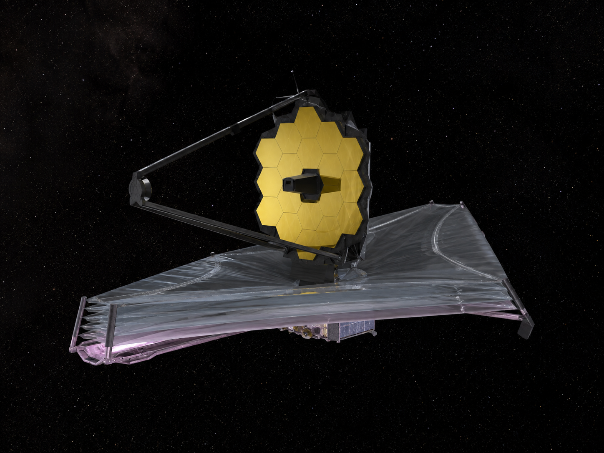

Exoplanet Atmosphere Report · JWST NIRISS SOSS + NIRSpec G395H
The planet whose transmission spectrum NASA unveiled on 12 July 2022 as JWST's first exoplanet result — a clear water-vapor detection that became one of the most recognized plots in the mission's history. This page works from that reduced data, plus a later analysis of its morning and evening terminators.
AI-generated artist's concept of WASP-96 b — not a real photograph. All data and figures in this report come from actual JWST NIRISS SOSS and NIRSpec G395H observations (see below).
Queried live from the NASA Exoplanet Archive TAP service (pscomppars).
| Radius | 13.45 Earth radii (~1.20 Jupiter radii) |
|---|---|
| Mass | 152.6 Earth masses (~0.48 Jupiter masses) |
| Orbital period | 3.43 days |
| Semi-major axis | 0.045 AU |
| Equilibrium temperature | 1285 K |
| Host star | WASP-96, G-type dwarf, Teff = 5540 K, 1.05 Rsun, 1.06 Msun |
| Distance | 352.5 parsecs (~1150 light-years) |
| Discovery | 2014, transit photometry (WASP survey) |
WASP-96 b is a "textbook" hot Saturn: hot enough for a clear, largely cloud-free atmosphere, orbiting a bright, quiet host star, with a large predicted atmospheric signal. Those three properties made it the ideal target to demonstrate JWST's transmission-spectroscopy capability to the public, and its NIRISS SOSS spectrum — showing an unmistakable water absorption feature near 1.4 microns — was the first exoplanet result released from the telescope.
A later analysis combined VLT/FORS2, NIRISS/SOSS, and NIRSpec/G395H. Multi-code retrievals strongly detect H2O, CO2, and Na; self-consistent grids favour 2–6× stellar metallicity, while SO2 receives only moderate support (ln B = 2.69). The authors also searched both JWST datasets for wavelength-dependent differences between the morning and evening terminators.

AI-generated 3D-render-style concept of WASP-96 b — not an actual image of the planet.
The supplementary archive contains 12 transmission products rather than two: symmetric spectra at several resolutions and separate NIRISS and NIRSpec morning/evening fits. The figure keeps the broad spectrum, fitted hemisphere parameters, and wavelength-dependent limb difference distinct.

scripts/analyze_spectrum.py.The CSVs cannot independently reproduce the paper's limb-asymmetry significance. Adding the released marginal morning/evening errors in quadrature gives a 0.78σ water-band difference; the source study's 10,000 uniform-planet light-curve simulations give 2.6σ. The limb parameters are jointly fitted, but their covariance is not released in these tables. Therefore the diagonal calculation neither validates nor overturns the injection/recovery result. The scientifically supported conclusion remains tentative—not zero, and not conclusive.
The −3.40σ diagonal NIRISS mean offset is a wavelength-independent nuisance diagnostic and is degenerate with transit mid-time; it must not be presented as atmospheric structure. NIRSpec's corresponding mean ratio is 0.04σ. The analysis removes these constant offsets before inspecting wavelength-dependent residual structure.
All 12 spectrum products are copied from Zenodo 17065171 with original headers and missing edge bins preserved. The source manifest records the 132 MB archive MD5 and a cross-platform subset hash. Reproduce with python scripts/validate_sources.py and python scripts/analyze_spectrum.py; download the structured summary, resolution inventory, and bin-level limb differences.

AI-generated illustration of the James Webb Space Telescope, whose NIRISS and NIRSpec instruments took the real spectra used in this report. Not an official mission photograph — see NASA/JWST for real imagery.